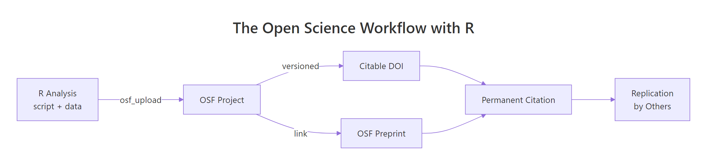
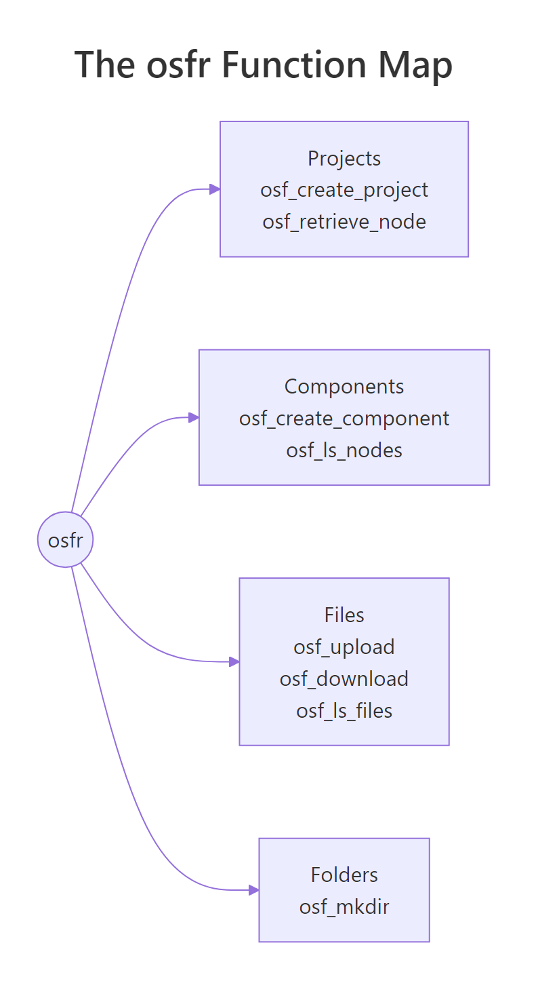

{% raw %}
Open Science with R: OSF Integration, Preprints & Sharing Code
Open science with R means publishing your code and data alongside your paper so anyone can re-run, verify, and extend your work. The osfr package lets you do all of that from R itself, create projects on the Open Science Framework (OSF), upload data and scripts, and link them to a citable preprint with a permanent DOI.
What does an open science R workflow look like?
Before we touch the OSF API, picture the artifact you'll end up sharing: a small directory holding your script, the data, and a manifest that lists every file with a fingerprint. That bundle is what reviewers, and future-you, actually need. Let's build one in R right now so you see what we're aiming at. Every later section just maps a piece of this bundle onto OSF.
We'll write a tiny analysis to a temporary directory, then summarise it as a manifest tibble. The manifest is the contract: filename, byte size, and an MD5 fingerprint anyone can recompute to confirm nothing was tampered with.
That's the whole point of open science in three columns, you've got the files, you've got their sizes, and you've got fingerprints anyone can recompute to confirm nothing was tampered with. The OSF workflow we'll build next simply takes this bundle and gives it a permanent home on the public web.

Figure 1: The open science loop, an R analysis becomes an OSF project, earns a DOI, links to a preprint, and travels back as a replication.
Try it: Add a description column to the manifest tibble that labels each file as "script", "raw data", or "derived data". Save the result to ex_manifest.
Click to reveal solution
Explanation: Adding a column to a data.frame is as simple as df$new_col <- values. The order in c(...) must match the row order of manifest, alphabetical by filename here.
How do you set up the osfr package and authenticate with OSF?
OSF is the public web service we'll push that bundle to. The R interface is osfr, maintained by rOpenSci. Installing it is one line; the only setup that takes thought is authentication, and it pays off forever once it's done.
OSF uses a personal access token (PAT), a long string you generate in your account settings and store as an environment variable named OSF_PAT. The package looks for that variable on load, so you never have to paste the token into your scripts.
The cleanest place to put OSF_PAT is your user-level .Renviron file, which R reads at startup. Open it with usethis::edit_r_environ(), add a single line OSF_PAT=ghp_yourLongTokenHere, save, and restart R. From that point on every osfr call in every project is authenticated automatically.
.Renviron to git. A leaked PAT lets anyone overwrite or delete your OSF projects. Add .Renviron to your global ~/.gitignore once and forget about it.Try it: Write a function that returns the value of an environment variable, or the string "<not set>" if the variable is missing or empty. Test it on OSF_PAT.
Click to reveal solution
Explanation: Sys.getenv() returns "" (an empty string) when a variable is missing, so nzchar() is the safe test, is.null() would never fire here.
How do you create an OSF project from R?
A "project" is OSF's top-level container, it has a title, a description, an optional license, and a permanent URL. Sub-divide it with components (sub-projects for raw data, scripts, and results) and directories (folders inside a component). All three live behind one verb each in osfr, and they pipe together.
The pipeline below creates a project, adds a "Raw data" component, and puts a scripts/ folder inside it, everything in five lines.
Each call returns an osf_tbl, a tibble with one row per OSF entity, an id column holding the OSF GUID, and a meta column with the API response. You don't usually inspect meta; you just chain the next call onto the row, exactly like any other tidyverse pipeline.
Try it: Build a named list called ex_meta with three fields, title, description, and license, that you would pass to a project-creation call. Use any project of your own.
Click to reveal solution
Explanation: Named lists are how R handles labelled metadata, they map cleanly onto JSON, which is what the OSF API expects under the hood.
How do you upload data and code to OSF and download it back?
With the project skeleton in place, sharing files turns into one verb each: osf_upload() to push, osf_download() to pull. Both accept the destination as the first argument and the file path as the second, so they pipe naturally from any project or component reference. Versioning is automatic, every re-upload of the same filename is stored as a new version, with the old one one click away.
The block below uploads two files into the Raw data component, lists what's there, then pulls one back into a fresh local directory.
The first call hands osf_upload() a vector of two file paths plus conflicts = "overwrite" so re-runs of the same script don't error out on the second pass. The follow-up osf_ls_files() confirms what landed in the component. Both calls return osf_tbl rows you can pipe further into osf_download(), osf_mv(), or osf_open().
The pipeline lists the component's files and hands them straight to osf_download(). The returned tibble adds a local_path column so you know exactly where the bytes landed, that's the path your downstream code should read from.
conflicts = "overwrite" for re-runs of the same script. The default is to error when a file with the same name already exists on OSF, which protects you from silent overwrites in interactive use but breaks unattended re-runs. Set it explicitly when you want idempotent uploads.Try it: Build a file manifest data.frame called ex_files from any directory, with three columns, path, bytes, and modified. Use file.info().
Click to reveal solution
Explanation: file.info() returns one row per path with size and modification time, perfect raw material for a manifest. Wrapping the timestamp in format() keeps the column readable when you print the data.frame.
How do you turn an OSF project into a citable preprint with a DOI?
Once your data and code live on OSF, the project page already has a stable URL, that's enough for a colleague to clone your work today. To turn it into something a journal can cite, mint a DOI for the project from the OSF web interface (Project Settings → "Create DOI"), then publish a matching OSF preprint that links back to it. From R, your job is to keep the metadata you'll quote in the manuscript and the citation in perfect agreement with the project page.
The block below builds a metadata list and a single citation string with glue::glue(). Re-run it whenever the project metadata changes and you'll never have a stale citation in your draft.
The glue() call interpolates each list field into a citation that matches the OSF page word-for-word. Now anyone, your future self, a reviewer, a citation manager, can paste that string into a manuscript and the DOI resolves straight to the project that contains the data and code.
Try it: Format a BibTeX entry called ex_bib from the same proj_meta list. Use glue() and a multiline string.
Click to reveal solution
Explanation: glue() uses single curly braces for interpolation, so literal braces (the kind BibTeX needs) must be doubled, {{ and }}, to escape them.
Practice Exercises
These capstones combine concepts from several sections. Variable names are prefixed with my_ so they don't clash with the tutorial's notebook state.
Exercise 1: Build a reusable bundle helper
Write a function make_bundle(objects, description) that takes a named list of R objects and a one-sentence description, writes each object to a CSV in a fresh temp directory, builds a manifest with checksums, and returns a single named list with three fields: dir, manifest, and description. Test it on list(cars = mtcars, summary = mt_summary).
Click to reveal solution
Explanation: A for loop is the simplest way to walk a named list when you need both the name (to build a filename) and the value (to write to disk). Returning everything in one named list keeps the helper composable, pass it to a future upload_bundle() and the call site reads cleanly.
Exercise 2: Build a citation-and-BibTeX helper
Write a function bundle_citation(meta) that takes a project metadata list (same shape as proj_meta) and returns a list with two fields, text (a plain-text citation) and bibtex (a @misc{} BibTeX entry). Test it on proj_meta.
Click to reveal solution
Explanation: Wrapping both formats in one helper guarantees they stay in sync: change a field in proj_meta and both the manuscript citation and the .bib entry update in one call.
Complete Example
Putting the pieces together, here's the entire open science loop in a single block, bundle, list metadata, prepare the upload calls (commented because they need your PAT), and emit a citation. Run it as-is for the parts that don't need OSF; uncomment the osfr lines in your local R session to actually push to OSF.
That's the full loop end-to-end. The bundle is reproducible, the metadata is structured, the upload is one verb away, and the citation is built from the same source of truth as the project page, so you can never accidentally cite a stale title.
Summary
The osfr package collapses open science into four building blocks. Once they're second nature you can publish a reproducible artifact, script, data, manifest, and citation, in a single R session.
| Verb | osfr function | What it does |
|---|---|---|
| Create | osf_create_project(), osf_create_component() |
Top-level container and sub-components on OSF |
| Organise | osf_mkdir() |
Folders inside a component |
| Push | osf_upload() |
Uploads files (versioned automatically) |
| Pull | osf_retrieve_node(), osf_ls_files(), osf_download() |
Lists and downloads files for reproduction |
Pair that with a one-time PAT in your .Renviron, a CC-BY license at project creation, and a glue()-built citation string, and you've turned an R script into a citable, replicable research object.

Figure 2: The four osfr building blocks, projects, components, files, and folders, and the functions you reach for in each.
References
- rOpenSci,
osfrpackage documentation. Link - CRAN, Getting Started with osfr (vignette). Link
- CRAN, Authenticating osfr (vignette). Link
- ropensci/osfr GitHub repository. Link
- OSF Help, Upload a Preprint. Link
- OSF Help, Preprint FAQs. Link
- Center for Open Science, OSF Product Information. Link
- The Open Science Manual, Chapter 2: The Open Science Framework. Link
Continue Learning
- R and the Reproducibility Crisis: 5 Habits That Make Your Research Replicable, the parent post on why open science matters and the five habits behind it.
- Reproducible R Projects with renv and here, pin your package versions and project paths so the bundle you upload to OSF actually re-runs on someone else's machine.
- Sharing R Code on GitHub, the version-control side of the same story, complementary to OSF for code-only releases.
{% endraw %}